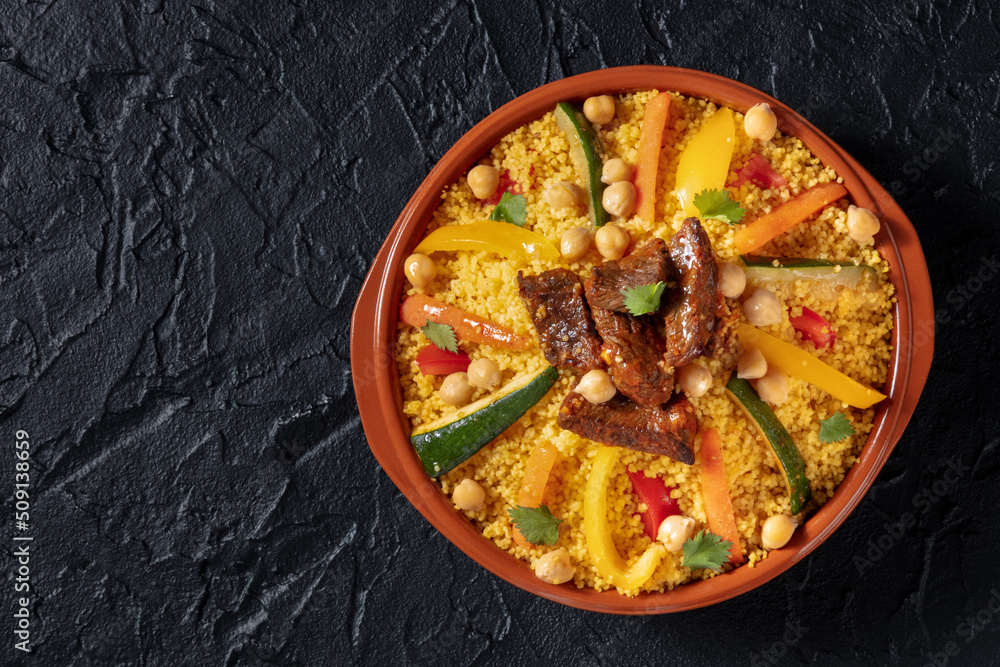

Couscous Marocain Traditionnel
Un plat emblématique du Maroc, symbole de convivialité et de partage
Ingrédients principaux
- 1 kg de semoule de couscous moyenne
- 1 kg de viande (agneau, bœuf ou poulet)
- 2 oignons émincés
- 4 carottes
- 3 courgettes
- 2 navets
- 2 tomates mûres râpées
- 1 poignée de pois chiches trempés la veille
- 1 morceau de chou
- Épices : sel, poivre, curcuma, gingembre, ras el hanout, safran
- Huile d'olive
- Beurre ou smen pour la semoule
Méthode de cuisson
- Dans le bas du couscoussier, faites revenir l'oignon et la viande dans un peu d'huile d'olive avec les épices.
- Ajoutez les tomates râpées, puis les pois chiches et un peu d'eau. Laissez mijoter 10 minutes.
- Ajoutez environ 2 litres d'eau et laissez cuire à feu moyen pendant 45 minutes.
- Entre-temps, travaillez la semoule avec un peu d'eau et d'huile pour bien séparer les grains, puis faites-la cuire à la vapeur dans la partie supérieure du couscoussier.
- Ajoutez ensuite les légumes (carottes, navets, courgettes, chou) et poursuivez la cuisson jusqu'à ce qu'ils soient tendres.
- Refaites cuire la semoule à la vapeur une seconde fois, puis ajoutez le beurre ou le smen.
- Servez la semoule dans un grand plat, disposez la viande et les légumes au-dessus, puis nappez de bouillon chaud.